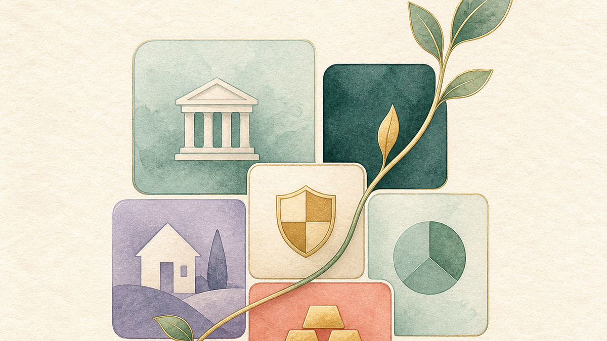
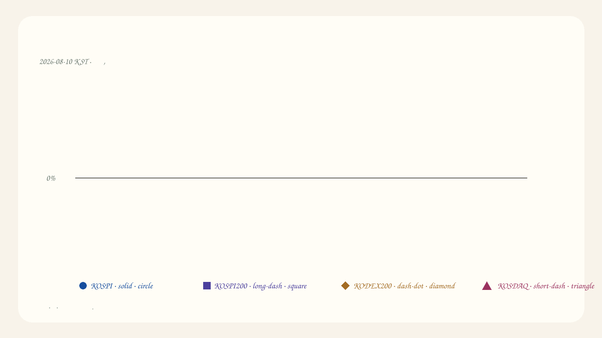

2026년 8월 10일
한국 시장 신호 노트
한국 정규장 마감 기준으로 주요 지수는 소폭 상승했으나 대형 반도체는 약세였고, 개별 장비 종목의 변동은 컸습니다. 아래 내용은 공개 시장 자료의 시점별 관찰입니다.
PUBLIC SNAPSHOT
지금 시장의 핵심 신호
KOSPI6,299.66+0.65%
KOSPI200977.84+0.32%
KODEX20098,265+0.18%
관측 구간16:10~16:50종가
VISUAL BRIEF
오늘의 공개 시장 보드

편집용 시각 자료입니다. 숫자·문자·거래 기호를 포함하지 않으며, 공개 시장 자료의 읽기 맥락을 돕습니다.
SIGNED MARKET SPREAD
0% 기준 변화폭

같은 날 공개 종가 변화율을 설명하기 위한 순차 시각화입니다. 실시간 틱 데이터나 미래 방향 예측이 아닙니다. 색상·선 패턴·마커는 시리즈를, 화살표와 부호는 변화 방향을 구분합니다.
KEY SIGNALS
무엇이 달라졌나
- KOSPI와 KOSPI200은 각각 +0.65%, +0.32%로 마감해 지수 기준의 변화폭은 제한적이었습니다.
- 삼성전자와 SK하이닉스는 각각 -0.43%, -0.14%로 지수 흐름과 차이를 보였습니다.
- 원익IPS는 +11.44%로 움직임이 컸습니다. 하나의 종목 변화를 시장 전체의 방향으로 일반화하지 않습니다.
- 표시된 값은 8월 10일 한국 정규장 종가 스냅샷이며 이후 시간외·해외시장 변화는 포함하지 않습니다.
NEXT CHECK
다음 확인표
미국 시장 초기 흐름지수와 반도체 지표의 방향이 같은지 시점과 함께 확인합니다.
다음 한국 장 시작장전 지표와 첫 체결의 차이를 구분해 관찰합니다.
다음 한국 장 중간지수와 주요 업종의 상대적 변화폭이 이어지는지 확인합니다.
다음 한국 장 마감당일 변동의 범위와 자료 시점을 다시 기록합니다.